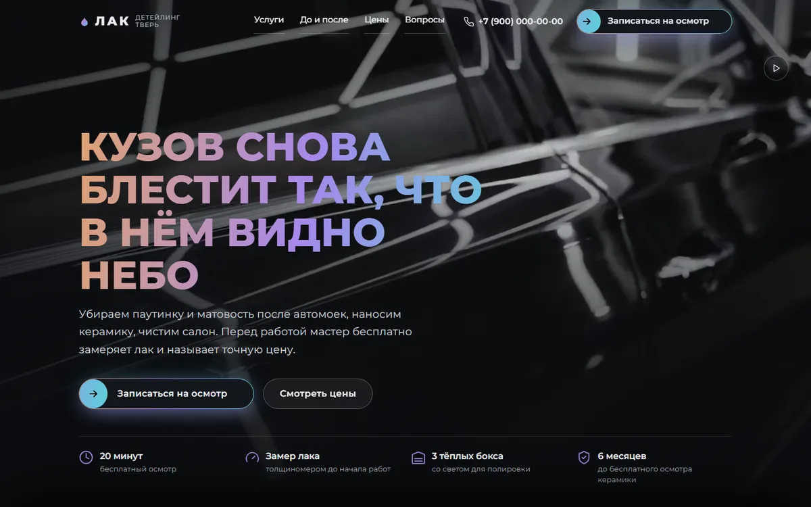
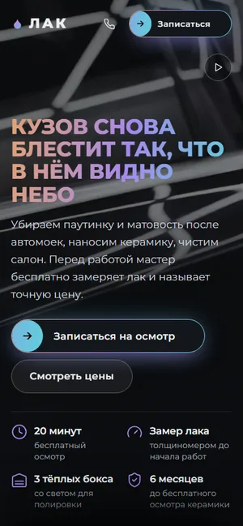

«Лак»
Лендинг детейлинг-студии
- Видео на первом экране и плавный переход ко второму слайду при прокрутке
- Ползунок «до и после», цены по классам машин, ответы на частые вопросы
- Форма записи на бесплатный осмотр, на телефоне кнопка записи всегда под рукой